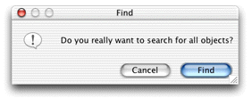

Problem: By default when you query on an entity without supplying a qualifier, you are presented with a dialog to confirm the action, as shown in Figure 12-1. This behavior is intended to warn users about performing unqualified queries of the data store, which could fetch hundreds or thousands of records.
Figure 12-1 Confirm dialog on unqualified queries
Solution: Use the rule system to override the default behavior.
The confirmation dialog results from user actions in query
controllers. Whenever you want to modify the behavior of a controller
in a Direct to Java Client application, you should first consult Appendix A, "XML Description of Classes and Actions". If you look for EOQueryController,
you'll find an XML attribute called runsConfirmDialogForEmptyQualifiers.
This is the switch you're looking for. So to disable the confirmation
dialog, add this rule to your application's d2w.d2wmodel file:
*true*runsConfirmDialogForEmptyQualifiers"false"50